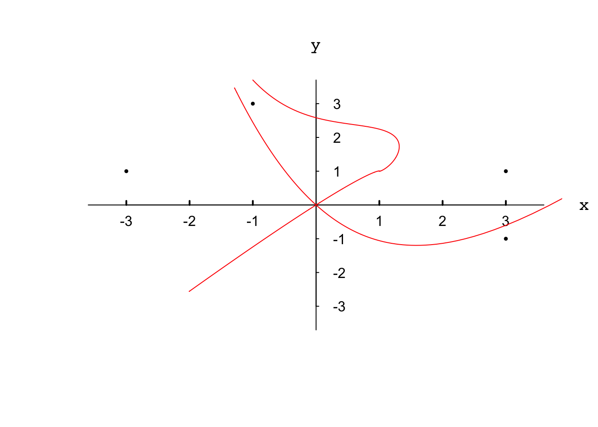

7.3 The DeSolve Package for Differential Equations
library(deSolve)
source('~/Dropbox/Project-R/MyToolbox/combineMAT.r') # combine matrices w diff size
source('~/Dropbox/Project-R/MyToolbox/DrawAxes.r') # Draw axes in the center
EQNS <- function(t, status, parms){
with(as.list(status),{
dX <- 2*Y-2*X^2
dY <- 4*X-Y-3*X^2
list(c(dX,dY))
})
}
dt <- 0.01; ## Step size in t
n <- 5 ## Number of initial value sets
# Each row is one initial value set in the form of
# X0, Y0, t_min, t_max, delta_t
# If t_min < t_max, solve ode backwards
ivp <- matrix(c(0.001, -0.0001, 0, 5, dt,
-0.001, -0.001, 3, 0, -dt,
-0.001, -0.001, 0, 2.8, dt,
0.001, -0.001, 2.37, 0, -dt,
-1, 3.7, 0, 5, dt),
nrow = n, byrow = TRUE)
# Numeric solution
userdata <- matrix(NA)
for (i in 1:n){
status <- c(X = ivp[i,1],Y = ivp[i,2])
t <- seq(ivp[i,3],ivp[i,4],ivp[i,5])
out <- ode(y = status, times = t, func = EQNS, parms = NULL)
# "out" has three columns: t, x, y
# Using out[, -1] excludes the first column, which is t.
# First column of userdata are sequential numbers 1, 2, 3, ...
# Rest odd columns of userdata is y
# Even columns of userdata is x
# Did not use cbind because all the 'out' from ode are different in row dimension
# Did not use rbind for the convenience of graphing
userdata <- combineMAT(userdata,out[,-1])
}
# Setting the range
# Find the max of the absolute value of x and y separately
# The factor 0.7 is from trial-and-error to make the plot look nice
xabs <- 0.7 * max(abs(userdata[,seq(2,2*n,2)]))
yabs <- max(abs(userdata[,seq(3,2*n+1,2)]))
# Blank plot with axes labels
DrawAxes(-xabs, xabs, -yabs, yabs, 'x','y', 0)
axis(1,at = c(-3,-2,-1,1,2,3),hadj = 0.5, padj = -1,
lwd.ticks = 2, tick = TRUE, tck = 0.015, pos = 0)
axis(4, at=c(-3,-2,-1,1,2,3), padj = 0.5,
tick = TRUE, labels = TRUE, las = 2, tck = -0.01, pos = 0)
# Draw solution curves
for (i in 1:n){
par(new=TRUE) # Add to existing plot
plot(userdata[,2*i], userdata[,2*i+1], type = 'l', col='red',
xlim = c(-xabs, xabs), ylim = c(-yabs, yabs),
xlab = '', ylab = '',axes = FALSE)
}
# Draw points of random initial conditions
par(new=TRUE) # Add to existing plot
plot(c(3, 3, -1, -3), c(1, -1, 3, 1), type = 'p', pch=20, cex=0.7,
xlim = c(-xabs,xabs), ylim = c(-yabs,yabs),
xlab = '', ylab = '',axes = FALSE)